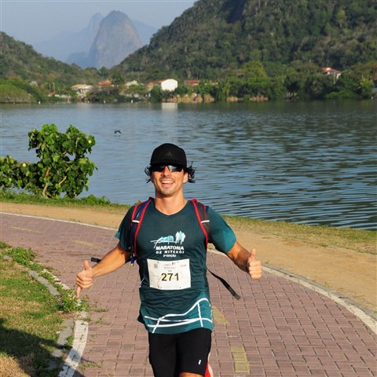

01Pantera
A hybrid edge/cloud AI platform covering the full cycle — prevention, detection, response, impact.
It combines cameras with satellite feeds and fire risk modeling to catch wildfires early — and predicts where they're heading, to help decide the response. Detection accuracy sits at 95% — that's the number people ask for. The number that decides whether it was worth building is minutes-to-alert, and what happens in the hour after.
Some of that ground is the Pantanal and indigenous territories, where the nearest brigade can be hours away. The rest is pulp/paper, agriculture, and conservation — clients who measure us in hectares that didn't burn.
I own the architecture end to end — edge inference, the hybrid on-prem/cloud platform, the ML behind detection and risk. Pantera itself is built by engineers, ML specialists and environmental scientists, and most of what it knows about fire, I learned from them.
02Approach
Three things I've come to believe, the expensive way.
The model is the easy part. What breaks in the field is dust, lightning, heat, a lens nobody cleaned, 4G that drops for six hours. Ninety-nine percent of what's written about ML is about the model. Almost none of it is about what happens when inference runs on a pole in the middle of nowhere — which is where the system either works or doesn't.
Accuracy is a vanity metric on its own. The honest questions are what a false negative costs when it's a real fire, and what a false positive costs when you wake a brigade at 3 a.m. Those two numbers are not symmetric, and they're not the same for every client. I build to the operator's cost function, not to a leaderboard.
Research and operations are two different sports. I contribute to an academic fire simulator and I help run a system that, right now, is detecting a real fire somewhere. Standing on both sides is rare, and most of what I think comes out of the gap between them.
03Elsewhere
I get models out of the demo and into places where nobody is around to restart them — that's the bar I hold anything I put into production to, agents included.
Agents running our own operation. Eight of them cover sales, customer success, support and marketing at 1.5°C, orchestrated on Hermes, an open-source framework I deployed on our own servers. One of them alone has opened 400+ issues, about 25% closing without any real review, mine included.
ForeFire, since 2022. An open-source wildfire simulation engine in C++ built by CNRS at Université de Corse. Mostly plumbing: Dockerizing it, setting up CI/CD, and writing docs people can actually follow, to help other groups run ForeFire in their own projects.
04Now
Two directions I'm paying attention to.
Climate and public technology. Fire, deforestation, monitoring — systems that governments, NGOs and communities actually operate, rather than pilots that end with the press release. This is where policy, community and engineering have to meet, and where I think I'm most useful.
Agentic systems outside of AI companies. The interesting problem isn't the models, it's putting them inside an operation where being wrong has a cost — which is most of the economy, and almost none of the current discourse.
None of this is work anyone does alone — if you're working on something in either direction, write to me — I'd like to hear about it.
Updated August 2026
05Off the clock

I run — marathon PR sub-3:23 — cycle, play sax in a carnival bloco, and spend as much time as I can with family and friends, traveling when it fits.